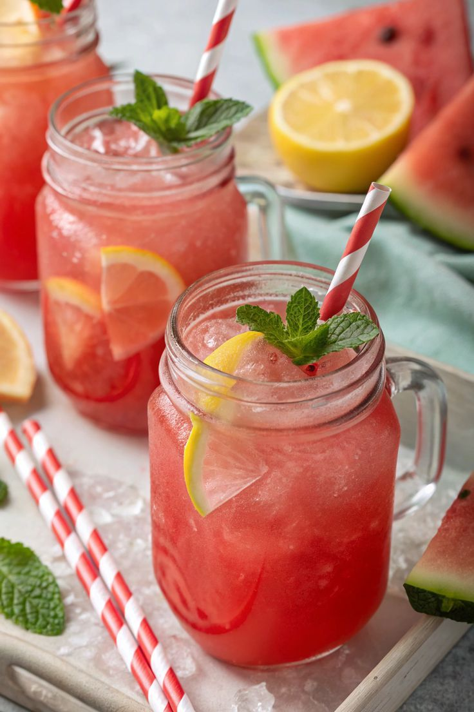

Watermelon Lemonade

This watermelon lemonade is a refreshing and hydrating drink, perfect for hot summer days. It's a delightful combination of sweet watermelon and tangy lemonade that will quench your thirst!
Ingredients:
- 4 cups cubed seedless watermelon
- 1 cup freshly squeezed lemon juice (about 4-6 lemons)
- 1/2 cup sugar (adjust to taste)
- 4 cups cold water
- Ice cubes
- Lemon slices and mint leaves for garnish (optional)
Instructions:
- In a blender, combine the cubed watermelon and blend until smooth.
- Strain the watermelon puree through a fine mesh sieve into a pitcher to remove any pulp.
- Add the freshly squeezed lemon juice and sugar to the pitcher. Stir until the sugar is dissolved.
- Pour in the cold water and mix well.
- Fill glasses with ice cubes and pour the watermelon lemonade over the ice.
- Garnish with lemon slices and mint leaves if desired.
- Serve immediately and enjoy!
Back to Recipes List